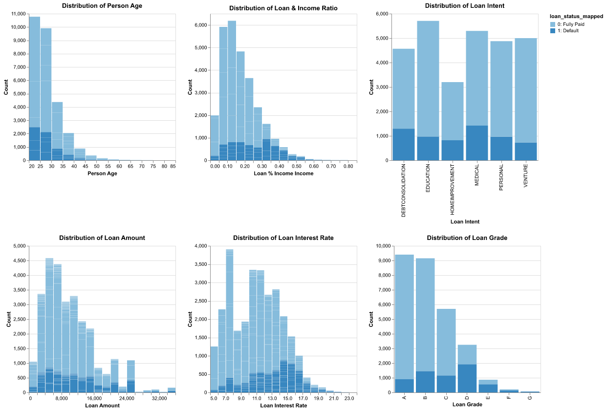
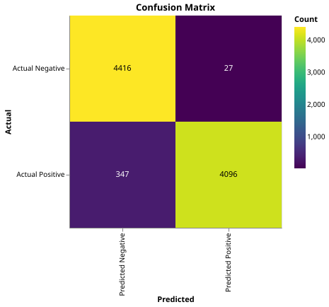
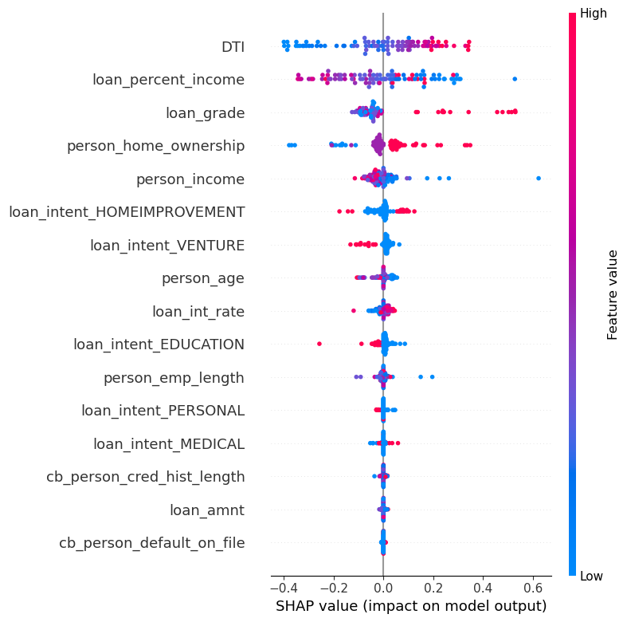

About the Project
This Loan Default Model and Exploratory Data Analysis project was developed to enhance my expertise in Machine Learning and data analysis. The project involves a thorough examination of loan data, followed by the creation of a predictive model that assesses the likelihood of loan defaults. The complete implementation is available in a Jupyter Notebook on Kaggle. [Check it out here]
The dataset, sourced from Kaggle, includes various loan attributes such as loan amount, interest rate, and borrower income. After cleaning and preprocessing the data for accuracy and consistency, I conducted an exploratory data analysis (EDA) to identify patterns and correlations. This analysis included visualizations to illustrate how different factors impact the probability of loan default, providing valuable insights into borrower behavior.
In building the predictive model, the data was split into training and testing sets. Given the class imbalance in the data, I applied the SMOTE technique to balance it. Various models, including Logistic Regression, Random Forest, and advanced stacking models, were trained and evaluated using metrics such as accuracy, precision, recall, and F1 score. The final model, a stacking ensemble of XGBoost, CatBoost, and LightGBM, with a neural network as the meta-classifier, achieved a high F1 score of 0.96, demonstrating its effectiveness in predicting loan defaults.
Model Performance Summary

This multi-panel visualization, created using the Altair library, provides an in-depth view of how various borrower characteristics, such as age, income ratio, loan amount, and loan intent, are distributed across both defaulted and fully paid loans.
By analyzing these distributions, I was able to identify important patterns and trends, which guided the feature engineering and model-building process. These insights were crucial in understanding the underlying factors contributing to loan defaults.

This is a confusion matrix that illustrates the performance of the final model on the test set. It shows the number of true positives (bottom left), true negatives (top left), false positives (top right), and false negatives (bottom left) predicted by the model.
The high number of true positives and true negatives, along with the low number of false positives and false negatives, indicate that the model is effective in predicting loan defaults and non-defaults.

This feature importance plot, generated using the SHAP library, highlights the most important features in the final model.
Dots represent individual loans. Their position on the horizontal axis shows whether they increase (right of mid-line) or decrease (left of mid-line) the chance of default.
Color indicates the feature's value: blue means low, and red means high.
For example, a high DTI (debt-to-income ratio) increases the likelihood of default, while a high annual income decreases it.
Contact
If you have any questions or would like to get in touch, please email me.